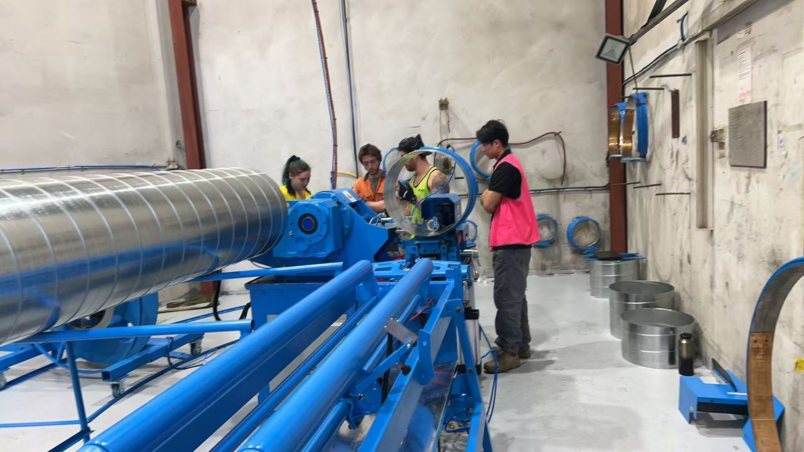

Case study · Australia · Commissioned October 2026
Kavanagh Industries, Sydney: a new SBTF-1602 spiral tubeformer, installed and making duct
Kavanagh Industries designs and manufactures commercial ductwork from its shop in Smithfield, western Sydney. In 2026 they added a Taokron SBTF-1602 spiral tubeformer to their round duct production. Our team installed and commissioned it on site, and Kavanagh's operators were making spiral duct, from small branch sizes up to large mains, before we left.

At a glance
| Customer | Kavanagh Industries, commercial ductwork manufacturer |
|---|---|
| Site | Smithfield, Sydney, NSW |
| Commissioned | October 2026 |
| Machine | Spiral Tubeformer SBTF-1602 with decoiler and run-out table |
| Duct range | Φ80 to Φ1600 mm round spiral duct; galvanised steel 0.4 to 1.3 mm |
| Our part | Machine, shipping to Sydney, customs clearance and delivery to the door, on-site installation, commissioning and operator training |
The machine
The SBTF-1602 forms continuous round spiral duct from coil. A patented flying slitter cuts each length while the tube keeps running, so the machine does not stop between pieces. One frame covers everything from Φ80 mm branch duct up to Φ1600 mm mains by changing the forming head, and it runs galvanised steel, stainless and aluminium. Full specifications are on the SBTF-1602 page.

The install
We delivered door to door on DDU terms, so Kavanagh did not have to deal with the shipping line or customs. On site our team set the decoiler, levelled the mainframe and run-out table, connected power and cooling, then set up and tested the forming heads one diameter at a time.
Training was easy, because Kavanagh already had an experienced spiral operator. James had been running their older spiral machine for years, and he knew the process so well that he showed our own team a few tricks of his own. Machines are only half of a duct shop. The people running them are the other half, and Kavanagh has good ones.

Why a second spiral machine pays
Round spiral duct is quick to make and quick to install, and commercial jobs keep asking for more of it. A shop with one older spiral machine running flat out has two choices: send work out, or add capacity. A second tubeformer also means a breakdown on one machine no longer stops round duct output for the whole shop.
Thank you
Thank you to Michael, Kavanagh's manufacturing manager, for organising the flights, accommodation and transport for our team. Thank you to Phil, their maintenance manager, who helped us from start to finish, to Amy for all her help on the floor, and to James for sharing his spiral know-how.
Related
- Spiral Tubeformer SBTF-1602: the machine in this case study
- Airtemp Canberra: a complete 8-machine rectangular duct shop
- Spiral duct forming guide
- Spiral tubeformer buying mistakes to avoid
- Taokron in Australia
Adding spiral duct capacity? Tell us the diameters and material thickness you make, and we will send back a machine recommendation and a quotation within 12 hours. Ask for the full SBTF-1602 running video too.
Request a quote